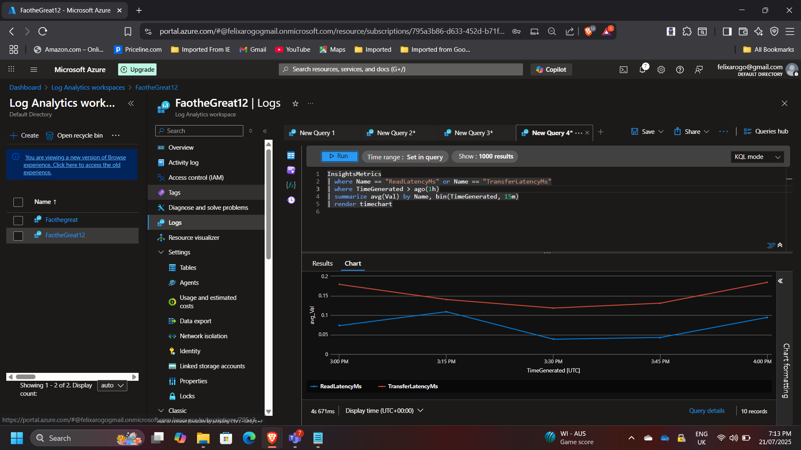
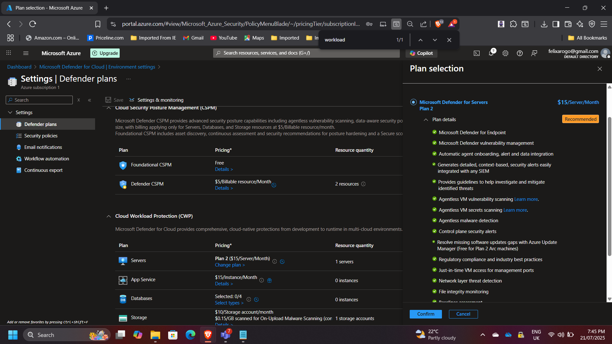
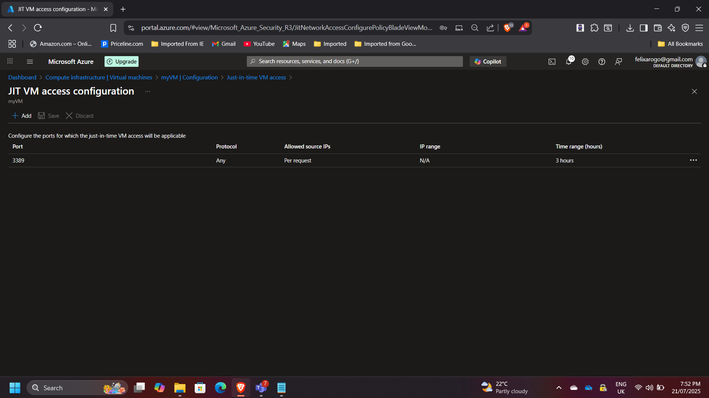
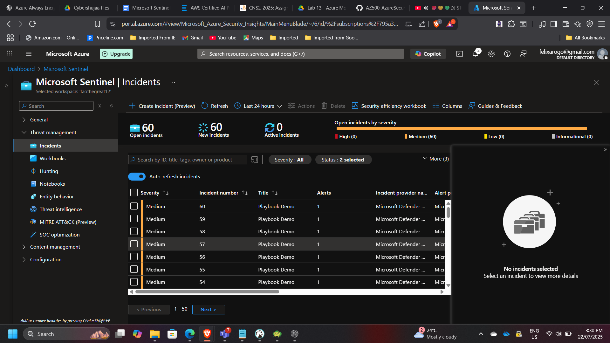

Unified Security Monitoring and Automation in Azure
Unified Security Monitoring and Automation in Azure
Timeline: August 2025
Role: Cloud Security Engineer
Skills: Microsoft Sentinel, Azure Monitor, Defender for Cloud, KQL, Logic Apps, JIT VM Access
Project Summary
This project integrates Azure Monitor, Microsoft Defender for Cloud, and Microsoft Sentinel to build a unified, automated security operations framework in Microsoft Azure. The implementation focused on three key pillars:
- Collecting and analyzing telemetry data from Azure VMs,
- Enabling advanced threat protection through Defender for Servers, and
- Automating incident detection and response with Sentinel playbooks.
The outcome is a resilient and secure Azure environment with centralized visibility, intelligent analytics, and proactive remediation workflows.
Objectives
- Deploy and monitor Azure virtual machines with Azure Monitor and Log Analytics.
- Enable Microsoft Defender for Servers Plan 2 for threat detection and secure configuration management.
- Configure Just-in-Time (JIT) VM Access to reduce attack surface on management ports.
- Implement Microsoft Sentinel to collect security data, create analytic rules, and automate incident response with Logic Apps playbooks.
- Validate integration and end-to-end security visibility across Azure resources.
Implementation & Highlights
1. Azure Monitor and Log Analytics
- Deployed an Azure VM (
myVM) and created a Log Analytics Workspace for centralized data collection. - Installed the Azure Monitor Agent (AMA) extension on the VM.
- Configured data collection rules for performance and event logs.
- Queried collected data using Kusto Query Language (KQL) to analyze metrics like disk latency and CPU usage.

2. Microsoft Defender for Cloud
- Enabled Defender for Servers Plan 2 on the subscription to enhance VM protection.
- Verified vulnerability assessments and endpoint protection recommendations.
- Integrated Defender data into Log Analytics for unified visibility.

3. Just-in-Time (JIT) VM Access
- Configured JIT access for the VM to restrict inbound management traffic.
- Defined approval-based access requests with time-bound validity.
- Validated the setup by requesting access and confirming controlled RDP/SSH availability.

4. Microsoft Sentinel Integration
- Onboarded Microsoft Sentinel to the Log Analytics workspace.
- Connected Azure Activity Logs as a data source to capture operational events.
- Created custom analytic rules for anomaly detection, such as unauthorized VM access attempts.
- Developed an automated Logic App playbook to trigger email notifications when high-severity incidents were detected.
- Simulated an incident to verify end-to-end response automation.

Results & Impact
- Achieved centralized monitoring and threat detection across the Azure environment.
- Reduced management port exposure using JIT access.
- Automated alerting and response workflows through Sentinel playbooks.
- Improved overall security posture and operational visibility.
Tools & Services Used
- Azure Monitor & Log Analytics – Data collection and performance insights
- Microsoft Defender for Cloud – Threat protection and secure configuration
- Microsoft Sentinel – SIEM/SOAR analytics and incident automation
- Azure Logic Apps – Playbook-driven automated response
- Kusto Query Language (KQL) – Custom telemetry and security analytics
Outcome
The project successfully implemented a modern, cloud-native Security Operations Center (SOC) model in Azure. It demonstrated practical expertise in monitoring, threat protection, and automated remediation, aligned with best practices from the Microsoft Cloud Security Benchmark.